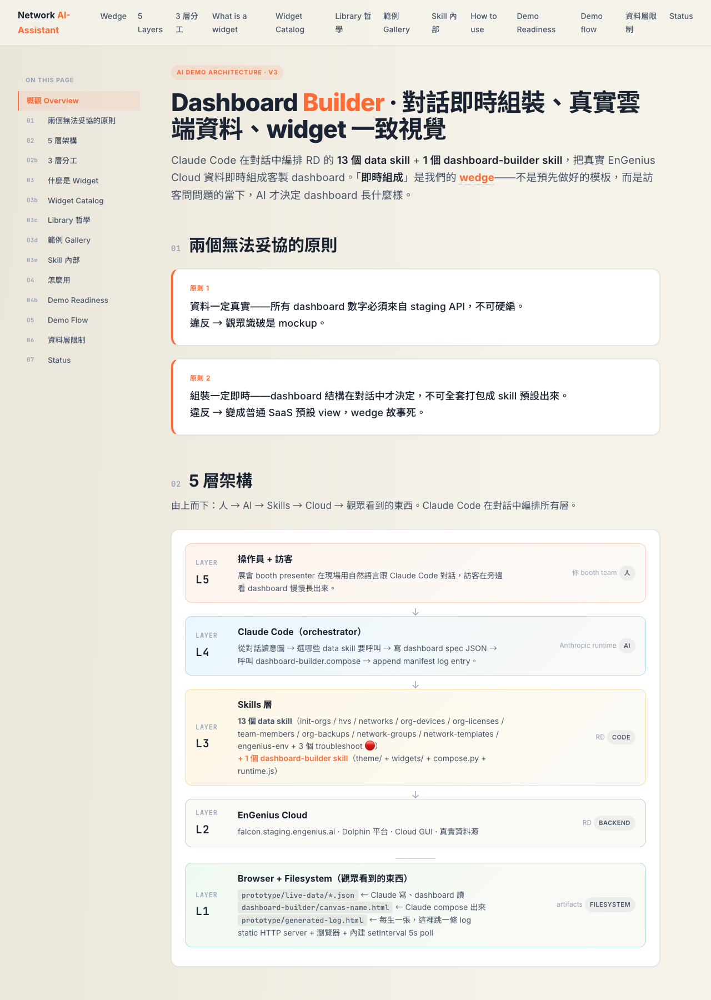
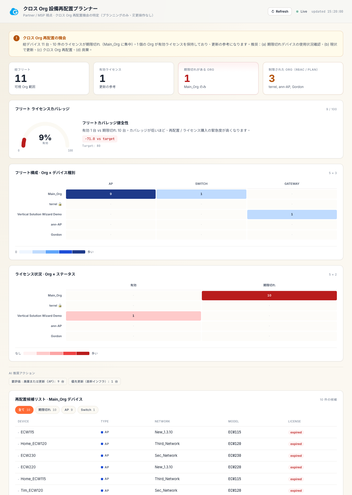

Dashboard Builder Skill v1
— AI 協作開發紀錄
為了日本展會要 demo「AI 動態生成 dashboard」，把原本一張一張手刻的 HTML，升級成一套 widget 化的 skill — 讓 AI 在對話中即時組裝 dashboard、視覺一致、可重用、可移交。

為什麼要做這件事
這次 session 的起點是一個很明確的痛點。
展會壓力：日本展會逼近，要 demo「訪客問問題 → AI 撈雲端資料 → AI 動態生 dashboard」這個故事。但前一階段的 PoC 是每個情境手刻 700+ 行 HTML，問題很大：
- 每張 dashboard 視覺風格略有差異（手刻容易飄）
- 加新情境要重寫整套，沒有 reuse
- 觀眾如果問「能不能加一個 X widget」我幾乎沒辦法即時回應
- Wedge 故事很弱：「AI 動態生」變成「我們預先做好的範本」
所以這次要做的事是：把 dashboard 拆成一套積木（widget library），讓 Claude 在對話中拿這些積木拼，每張 dashboard 由一份簡單的 spec JSON 描述。同時把整套東西包成一個 skill，未來可以移交給 RD。
這跟 frontend 工程的 component library 思路一樣，但我不會 React，整套必須走純 HTML + vanilla JS + 純 stdlib Python，這樣 Claude 能 self-contained 生出來、不依賴 build system。
最終樣貌
整套是一個 dashboard-builder/ 資料夾，跟既有 proposal site 互不干擾：
- 1 個 architecture page（10+ 章節，含 sticky 左側 TOC、3 層分工視覺、demo readiness 規範、widget gallery、skill 內部檔案列表）
- 1 個 widget catalog page（10 widget spec 用 marked.js 即時 render）
- 5 個 validated 情境：S2 multi-org 治理 / S3 org 健康 / S4 離職權限 / S5 license 續約 / S7 跨 org 設備調撥
- 17 張 live dashboard canvas：5 個情境 × 3 語言（zh-TW / EN / JA）+ dark theme variant + v1 hand-crafted 對照版
- 1 套 dashboard-builder skill 在
dashboard-builder/skill/：10 widget HTML partial + theme tokens + compose.py + 10 份 widget reference markdown - 4 份推 RD 會議材料：30-min agenda、5 個 P0 op 的具體 API spec proposal、demo storyboard、history API 提案
- 2 個 helper script：
refresh-all.sh（撈雲端真實資料，14 秒）+compose.py（spec → HTML，200ms）
整個資料夾 self-contained，掛在 Vercel 上任何人有 URL 就能瀏覽。

--locale ja 切換語言（為日本展會準備）
技術選型
| 工具 / 技術 | 選的理由 |
|---|---|
| 純靜態 HTML + vanilla JS | 沒有 build 步驟、Vercel 直接服務；每張 dashboard 是 self-contained HTML，方便分享 |
| Python 3 + stdlib only（compose.py） | 不需要額外 venv 依賴；任何裝 Python 的同事都能跑 |
| JSON spec + deep-merge | i18n 用「base + locales」結構，spec 內嵌每個語言的 override，不必維護多檔 |
| CSS custom properties（theme tokens） | 改一處（tokens.css）全 dashboard cascade；dark theme 透過 tokens-dark.css 切換 |
| IntersectionObserver + scroll listener | 兩重保險追蹤 sticky TOC 的 active 狀態 |
| Marked.js (CDN) | 在 catalog viewer 即時 render references/widget_*.md，不用預先把 markdown 轉 HTML |
外部服務與金鑰
這個工具串接的所有外部資源 — 整套 demo 不需要 LLM API key，Claude 跟我的對話發生在 Claude Code 內，跟產出的 dashboard 沒有 runtime 連線關係。
MANAGE_SYSTEM_URLAPI_KEYapi-skills/ 套件系統架構
這次 session 的核心洞察：3 層分工（Playbook / Orchestration / Primitives）— 不是技術分層，是「誰擁有 / 誰決定 / 誰被組合」的責任分層。
org-health-overview skill）等於凍結用法，wedge 故事死。Claude 自己就是 orchestration 層，現場即時組合 primitives。推進方式
這次 session 沒有按「先設計 → 再實作 → 再測試」的瀑布流。整套是用 「探索 → 拆解 → 驗證 → 迭代」的對話節奏慢慢長出來的。
幾個關鍵的推進手法：
最開始我糾結「要不要先想情境，再看哪些 op 能支援」。Claude 反問「你怕想了情境結果沒 op 可用嗎？那就並行——一邊想情境、一邊查 op 列表」。後來這變成標準節奏：先掃 api-skills/（13 skill / ~93 ops）→ 列 10 個情境候選 → 每個情境標 🟢/🟡/🔴 可行性。
不是先設計 widget library 再做情境。而是先讓 Claude 用「對話 → 撈 5 個 op → 寫 700 行 HTML → live demo」做出第一張 org-health canvas。第一張做完才開始談「能不能拆成 widget」。這樣 widget library 是有真實使用案例 driven 出來的，不是憑想像。
做完 widget v1 後，每加一個新情境都不准改 widget code，只准寫新 spec JSON。如果寫不出來，就回頭補 widget。S4 / S5 / S2 / S7 都是這樣加進來的——每加一個就確認 widget library 還夠用，不夠就補（這就是 timeline / donut / gauge / heatmap 加進來的理由）。
中間有個轉折是這樣的——我問「是不是每個情境都要先 validate 才能上 booth？」Claude 回應「對，這應該寫成正式紀律」。下一步就把這條口頭規則升級成 architecture.html 的 #demo-readiness 區段（3 個 validated 條件 / 6 步 pipeline / 5 項展前 checklist）。
我整個 session 沒打過一行 Python 或 HTML。我的角色是：看視覺、判斷語氣、決定方向、提出策略問題。Claude 全部程式碼自己寫、自己 verify、自己截圖回報。但所有「要不要這樣做」的決策都過我一遍。
踩到的坑，讓我更懂的事
每一個坑都讓我對「AI 協作要怎麼做」更清楚一點。
org-health-overview skill，使用者一句話就解決。Claude 的反駁：「不需要——Claude Code 本身就是那一層。你把它包成 skill，等於告訴觀眾『這是我們預先做好的 dashboard view』，跟 cloud GUI 預設 view 沒兩樣。Wedge 故事死。」
洞察：「Claude 是 orchestration 層」這件事我之前沒想透。Skills 是被組合的零件，Playbook 是 Claude 讀的參考資料，Claude 自己就是現場拼裝的人。我做的是給 Claude 更好的零件和更好的參考資料，不是把 Claude 的判斷凍結成 code。
<a> 會被瀏覽器自動關閉
<a> 直接放進外層 <a class="gallery-card"> 裡。跑出來 DOM 整個破掉：locale-pill 跑到 card 外面、層級錯亂、CSS selector 全失準。Claude 的解釋：HTML 規範禁止 nested anchors。瀏覽器 parser 看到內層 <a> 就會自動 close 外層 <a>，導致整段 DOM 結構斷裂。
解法：用 wrapper <div class="gallery-item"> 把外層 card 跟內部 locale pill 平行放在裡面，不要嵌套。
洞察：這不是 CSS 問題，是 HTML 語意問題。瀏覽器 parser 的「自我修正」會默默把你的 DOM 改成它能接受的形狀，看不到 console error 但行為全錯。
原因：動態文字（如「10 台設備中有 10 台 license 已過期；建議採購 10 張新 license」）是 JavaScript runtime 算出來的——spec 只 reference 一個 compute function 名稱，實際字串組裝在 widget HTML 裡。要 i18n 必須把整個 compute_fns 字串連同 template literals 內的中文一起替換。
解法：每個 locale override 裡塞完整的 compute_fns JS 字串（重新定義 license_summary、stale_subtext 等）。spec 級的定義會 override widget 內建的（因為 compose.py 把 spec compute_fns 放在 widget script 之後）。
洞察：i18n 不只是「翻 label」。任何 runtime 動態組出的字串都要納入翻譯範圍。如果原本架構是「字串散在 JS template 字面值」，i18n 工作量會比想像大 3-5 倍。
window.scrollTo() 時不更新 active 狀態。但真人滑鼠捲頁是 work 的。原因：Preview tool 的 programmatic scroll API 可能沒觸發 native scroll event（不確定是 Playwright 還是 viewport sandbox 的行為）。手動的 wheel 事件正常觸發。
洞察：開發環境跟真實使用環境會有微妙差異。看到「console 沒 error 但行為不對」時，要先懷疑是否是測試環境的副作用，而不是程式錯。
洞察：CLAUDE.md 是給「下一個 AI session」看的工作備忘錄，不是專案歷史紀錄。只該保留「會影響下一個 session 寫程式碼方式」的資訊。已穩定的功能描述應該移到 README.md（給人看），技術注意事項移到 Common Pitfalls 或 Architecture（給 AI 看）。
這次 sync 時做了一次大幅汰換——拿掉 6 個 ops 硬編清單、舊 workflow ASCII 圖、Line 2 已完成清單，換成現在的 dashboard-builder skill 區塊 + 5 條新 pitfall。CLAUDE.md 還是 250 行但內容密度高很多。
AI 怎麼幫我做的
| 環節 | 誰主導 | 說明 |
|---|---|---|
| 概念定位 / wedge 策略 | 我 | PMM 視角的判斷 |
| 技術架構（3 層分工）/ 分層理由 | 協作 | Claude 提方案、我選哪條 |
| 寫程式碼（Python / HTML / CSS / JS / spec JSON） | Claude | 我 100% 不寫 |
| 視覺判斷 / 文案語氣 / 字體大小 | 我 review、Claude 改 | 螢幕截圖 → 我指問題 → Claude 修 |
| 文件結構（architecture.html 章節） | 協作 | 我提需求、Claude 結構化 |
| 中→英、中→日 翻譯（草稿） | Claude | 日文要 native reviewer 過 |
| RD 對齊材料策略（meeting 怎麼開） | 我給方向、Claude 起草 | 4 份會議材料的 talking points 我修字 |
| 規範決策（如 validated path 紀律） | 我提問、Claude 規範化 | 口頭規則升級成正式 doc 區段 |
幾個我覺得有效的提問方式：
- 「探索 → 收斂」雙階段：先丟模糊問題「這個 dashboard 設計現在有什麼限制？」讓 Claude 提多個方向；再聚焦到一個方向後問「ok 我選 X，請你寫」。
- 策略決定型問題：「我糾結是 A 還是 B，條件是 X。先別動手，分析給我看」。讓 Claude 做技術 trade-off 分析，我做業務決策。
- 症狀描述 + 求解釋：「我看到 gallery 變成 8 張卡了但應該只有 4 張」→ Claude debug + 解釋根因。比起「請修這個 bug」更能讓 Claude 順便解釋背後機制，我順便學。
- 「規範化我剛說的」：當我口頭定下一條規則（如 demo readiness），追問「我們把它寫成正式 doc 區段嗎」。這把判斷升級到專案制度。
整個 session 有 3 個明顯的方向修正點：
轉折 1：「不蓋 scenario skill 層」
我問「是不是要在 skill 之上做一層 agent skill 整合多個 skill 的情境？」Claude 強烈反對，解釋這會殺掉 wedge 故事，讓我重新理解 Claude 自己就是 orchestration 層。這個對話約佔 session 的 5%，但決定了整套架構走向。
轉折 2：「dashboard-builder/ 該不該包進 api-skills/」
我問「為什麼放在 GitHub 而不是包進 skill？」Claude 拆解出兩種東西的歸屬：skill code 應該歸 RD（移到 api-skills/）、demo/proposal 材料應該公開（留在 network-ai-assistant repo）。這幫我釐清檔案結構的根本理由。
轉折 3：「validated path 紀律」
我問「是不是每個情境都要先 validated？」Claude 不只回答「對」，還主動把它規範化——進 architecture.html 新章節 #demo-readiness（3 個必要條件 + 6 步 pipeline + 5 項展前 checklist）。口頭規則升級成正式制度，未來下個操作員就有規範可循。
如果繼續往下
下一個 session 的優先序很明確：
- RD 補 troubleshoot scripts（rpc_led_dance / rpc_kick_clients / subscribe_client_list / subscribe_cable_diag / rpc_reboot 這 5 個 P0 op）→ 解鎖最戲劇的 booth demo（讓現場 AP 真的閃 LED、即時踢可疑 client）
- RD 補 history aggregation API → 解鎖 line_chart / sparkline / area_chart 這整個趨勢類 widget 品類
- Dashboard 視覺風格優化：widget UI 還可以更精緻（特別是顏色比例 / 字距 / 留白）。改一處
skill/theme/tokens.css就 cascade 全 dashboard，迭代成本低。 - 新情境腦力激盪：找更吸睛、更有 wow 感的新 demo 故事。每個新情境走 validated path pipeline（6 步）加入 examples/。
- 日文版找日本 native speaker review（目前是 LLM 草稿，可能有不夠地道的措辭）
- 把
dashboard-builder/skill/整合進 RD 的api-skills/skills/dashboard-builder/（P2，docs/rd-handoff.md 有完整步驟）
1. 這個案例展示了什麼
非工程師的 PMM 怎麼用 AI 主導一個技術產出：我不寫程式碼，Claude 寫全部；但「要不要這樣做」「方向對不對」「視覺好不好」都要過我一遍。 AI 接管實作後，主導者的時間從「碰程式碼」轉到「做策略決定 + 視覺判斷 + 規範口頭規則」。
最有效的工作節奏是「探索 → 拆解 → 驗證 → 迭代」的對話循環——不是先寫好 spec 再交給 AI 實作，而是先做一個能跑的小版本，再對著它討論「下一步該往哪走」。每加一個 widget 就跑一次 compose 看視覺，每寫一個情境就回頭驗證 widget 還夠不夠用。
2. 可移植性
✅ 可直接複製的條件：
- 非工程師背景但需要 build 一個技術產出（demo / 工具 / 內部系統）
- 跨多個 session 的累積開發（記得每次都跑
/sync-context） - 涉及 RD 移交、需要會議材料、多語言版本
- 工具要 self-contained / 純前端 / 不能依賴 build system
❌ 不適合直接複製：
- 牽涉複雜業務邏輯、需要工程師深度介入的系統
- 純概念學習（不需要產出工具）
- 單次工程作業（不會累積成跨 session 工程）
3. 起手式 prompt
如果你也要用這個方式做事，下次跟 Claude 對話可以這樣開頭：
我有一個 [描述產品 / 工具 / demo]，目前狀態是 [現況限制]，我想要 [目標]。
我不寫程式碼，請你寫；但所有「要不要這樣做」我要過一遍。
先別動手 — 幫我先盤點：
1. 這件事可以怎麼拆解成元件？
2. 哪些是 reusable 的零件、哪些是一次性的場景？
3. 我需要做哪些決策？條件分別是什麼？或者中期碰到方向疑問時：
我糾結 A 還是 B。A 的理由是 [...]，B 的理由是 [...]。
請你不要直接給答案，而是分析這兩條路各會帶我到哪。
我做業務決策、你提技術 trade-off 分析。